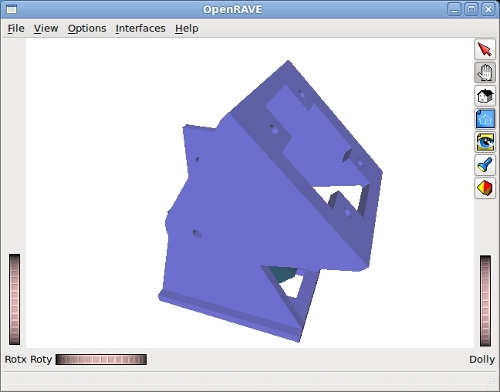

JDErobot es un software para desarrollo de aplicaciones de robótica, creado en el grupo de robótica de la Universidad Rey Juan Carlos (URJC). Actualmente se está trabajando en la versión 5.0. Yo estoy colaborando para añadir soporte para robots modulares.
JDErobot 5.0 utiliza ICE (the Internet Communications Engine) para interconectar todos sus 'componentes'. ICE permite realizar sistemas distribuidos, para cualquier plataforma y en muchos lenguajes diferentes.
Para familiarizarme con ICE he programado el componente Servo1, que permite mover un módulo Y1 virtual, igual que si fuera uno real.

El servidor utiliza el plug-in OpenMR de OpenRave para implementar el módulo Y1. Se queda esperando conexiones de los clientes, que pueden estar tanto en el ordenador local, como en cualquier otro de la intranet (por ejemplo un teléfono con Android).
¡Anímate a probarlo! Puedes encontrar las fuentes en este repositorio alojado en la URJC.